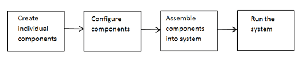

System Design in MATLAB Using System Objects
System Design and Simulation in MATLAB
System objects allow you to design and simulate your system in MATLAB®. You use System objects in MATLAB as shown in this diagram.

Create Individual Components — Create the System objects to use in your system. In addition to the System objects provided with toolboxes, you can also create your own System objects. See Create System Objects.
Configure Components — If necessary, change the objects’ property values to model your particular system. All System object™ properties have default values that you may be able to use without changing them. See Configure Components.
Assemble Components Into System — Write a MATLAB program that includes those System objects, connecting them using MATLAB variables as inputs and outputs to simulate your system. See Connecting System Objects.
Run Your System — Run your program. You can change tunable properties while your system is running. See Run Your System and Reconfiguring Objects.
Create Individual Components
The example in this section shows how to use System objects that are predefined in the software. If you use a function to create and use a System object, specify the object creation using conditional code. Conditionalizing the creation prevents errors if that function is called within a loop. You can also create your own System objects, see Create System Objects.
This section shows how to set up your system using predefined components from DSP System Toolbox™ and Audio Toolbox™:
dsp.AudioFileReader— Read the file of audio datadsp.FIRFilter— Filter the audio dataaudioDeviceWriter— Play the filtered audio data
First, create the component objects, using default property settings.
audioIn = dsp.AudioFileReader; filtLP = dsp.FIRFilter; audioOut = audioDeviceWriter;
Configure Components
When to Configure Components
If you did not set an object's properties when you created it and do not want to use default values, you must explicitly set those properties. Some properties allow you to change their values while your system is running. See Reconfiguring Objects for information.
Most properties are independent of each other. However, some System object properties enable or disable another property or limit the values of another property. To avoid errors or warnings, you should set the controlling property before setting the dependent property.
Display Component Property Values
To display the current property values for an object, type that object’s handle name
at the command line (such as audioIn). To display the value of a
specific property, type objecthandle.propertyname (such as
audioIn.FileName).
Configure Component Property Values
This section shows how to configure the components for your system by setting the component objects’ properties.
Use this procedure if you have created your components separately from configuring them. You can also create and configure your components at the same time, as described in a later example.
For the file reader object, specify the file to read and set the output data type.
For the filter object, specify the filter numerator coefficients using the fir1 function, which specifies the low pass filter order and the cutoff frequency.
For the audio device writer object, specify the sample rate. In this case, use the same sample rate as the input data.
audioIn.Filename = "speech_dft_8kHz.wav"; audioIn.OutputDataType = "single"; filtLP.Numerator = fir1(160,.15); audioOut.SampleRate = audioIn.SampleRate;
Create and Configure Components at the Same Time
This example shows how to create your System object components and configure the desired properties at the same time. Specify each property with a 'Name', Value argument pair.
Create the file reader object, specify the file to read, and set the output data type.
audioIn = dsp.AudioFileReader("speech_dft_8kHz.wav",... 'OutputDataType',"single");
Create the filter object and specify the filter numerator using the fir1 function. Specify the low pass filter order and the cutoff frequency of the fir1 function.
filtLP = dsp.FIRFilter('Numerator',fir1(160,.15));
Create the audio player object and set the sample rate to the same rate as the input data.
audioOut = audioDeviceWriter('SampleRate',audioIn.SampleRate);
Assemble Components Into System
Connecting System Objects
After you have determined the components you need and have created and configured your System objects, assemble your system. Use the System objects like other MATLAB functions and include them in MATLAB code. You can pass MATLAB variables as input arguments into System objects.
The main difference between using System objects and using functions is that System objects use a two-step process. First you create the object and set its parameters and then, you run the object. Running the object initializes it and controls the data flow and state management of your system. You typically call a System object within a code loop.
You use the output from an object as the input to another object. For some System
objects, you can use properties of those objects to change the inputs or outputs. To
verify that the appropriate number of inputs and outputs are being used, you can use
nargin and nargout on any System object. For information on all available System object functions, see System Object Functions.
Connect Components in a System
This section shows how to connect the components together to read, filter, and play a
file of audio data. The while loop uses the isDone function to read
through the entire file.
while ~isDone(audioIn) audio = audioIn(); % Read audio source file y = filtLP(audio); % Filter the data audioOut(y); % Play the filtered data end
Run Your System
Run your code by either typing directly at the command line or running a file containing your program. When you run the code for your system, data is processed through your objects.
What You Cannot Change While Your System Is Running
The first call to a System object initializes and runs the object. When a System object has started processing data, you cannot change nontunable properties.
Depending on the System object, additional specifications might also be restricted:
Input size
Input complexity
Input data type
Tunable property data types
Discrete state data types
If the System object author has restricted these specifications, you get an error if you try to change them while the System object is in use.
Reconfiguring Objects
Change Properties
When a System object has started processing data, you cannot change
nontunable properties. You can use isLocked
on any System object to verify whether the object is processing data. When processing is
complete, you can use the release function to release
resources and allow changes to nontunable properties.
Some object properties are tunable, which enables you to change them even if the object is in use. Most System object properties are nontunable. Refer to the object’s reference page to determine whether an individual property is tunable.
Change Input Complexity, Dimensions, or Data Type
During object usage, after you have called the algorithm, some System objects do not
allow changes in input complexity, size, or data type. If the System object restricts
these specifications, you can call release to change these
specifications. Calling release also resets other aspects of the
System object, such as states and Discrete states.
Change a Tunable Property in Your System
This example shows how to change the filter type to a high-pass filter as the code is
running by modifying the Numerator property of the filter object. The
change takes effect the next time the object is called.
reset(audioIn);% Reset audio file Wn = [0.05,0.1,0.15,0.2]; for x=1:4000 Wn_X = ceil(x/1000); filtLP.Numerator = fir1(160,Wn(Wn_X),'high'); audio = audioIn(); % Read audio source file y = filtLP(audio); % Filter the data audioOut(y); % Play the filtered data end